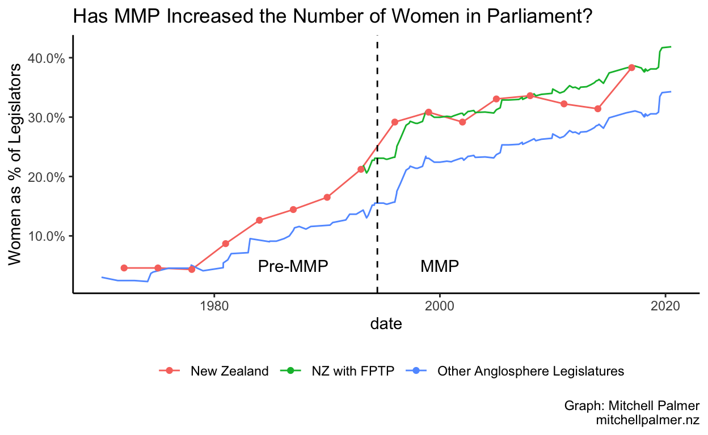
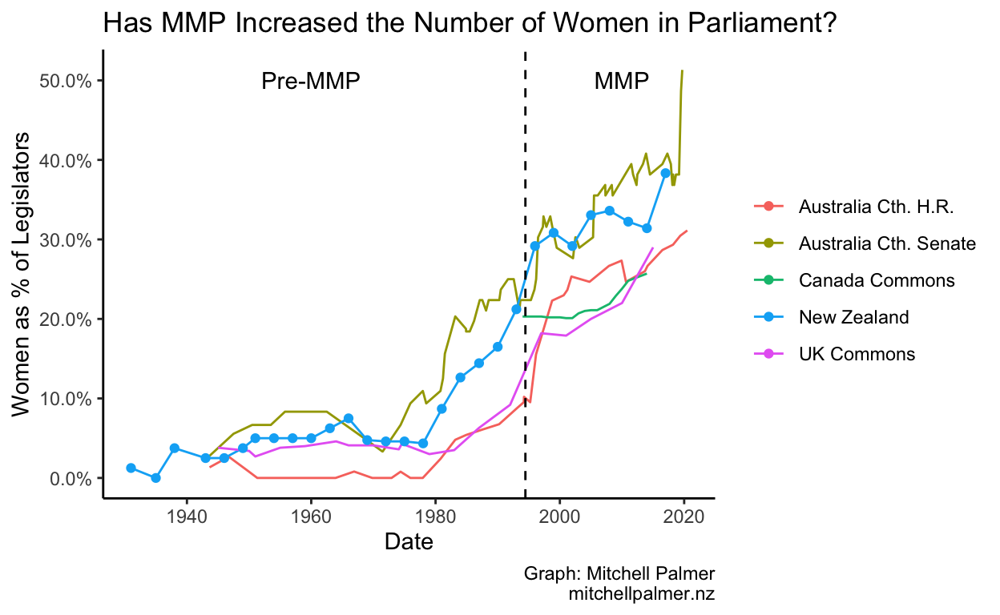

I wasn’t so sure, so I tested it with data.
Henry Cooke at Stuff recently wrote a very interesting series of articles on New Zealand’s experiences with electoral reform to celebrate (and Henry is definitely celebrating – his pro-MMP position isn’t hidden) 25 years of the MMP system in New Zealand. The articles contain a lot of interesting history and I highly recommend them.
However, one claim from the last article in the series raised my hackles. Henry says, “MMP has definitely delivered more diversity to Parliament. Women won just 10 per cent of the seats in the last nine elections under FPP. They have won 34 per cent in the first nine MMP elections.” Although not explicitly stated, the clear implication we are meant to draw is that MMP caused this increase in diversity and, in particular, the increased representation of women.
That is, on its face, a ludicrous conclusion to draw from that single datapoint. It is almost a textbook case of post hoc ergo propter hoc1 fallacy. Quite a lot other than the electoral system changed between 2020 (the last election in the sample Henry draws from) and 1969 (the first) – especially for women. To be fair to Henry, he isn’t just focused on gender diversity and he offers some good analysis of why MMP might particularly lead to greater representation for geographically disperse minorities. (Of course, women aren’t a minority and they aren’t any more geographically disperse than men, but that’s a point for another post.) But, I think I am justified in thinking a little more epistemic humility is necessary before leading readers to (if not explicitly stating) such causal conclusions from only a single datapoint.
I decided to test Henry’s conclusion, using some very back-of-the-envelope maths. My approach is simple: To know what the causal impact of a particular policy is, you need to know what would happen in the counterfactual world in which the policy was not applied (and everything else stayed the same). You can then calculate the difference between that world and our world and be certain that any difference was caused by the policy. Unfortunately, we do not currently have the scientific capability to access such parallel universes.
What I did instead was to create a proxy for a counterfactual New Zealand Parliament, assuming we had retained first-past-the-post (FPTP). In so doing, I assumed that New Zealand was broadly similar to fellow English-speaking Westminster democracies (the UK, Australia, and Canada) and that, in the absence of the MMP reform, the number of women in our Parliament would follow the same path as it has in those three countries on average. (I only considered the elected chambers of each country’s Parliament). This controls for effects like the gradual improvement in the position of women which we have seen in the West over time. Obviously, however, there are going to be some baseline differences – after all New Zealand was the first country to give women the vote, so perhaps we are just generally more feminist than the rest of the Anglosphere. So, to create a ‘counterfactual New Zealand’, I calculated the difference between the proportion of women in New Zealand’s last FPTP Parliament and the average proportion across the other three countries. I then assumed this difference would remain static over time, allowing me to create a counterfactual value for the percentage of women in the New Zealand Parliament simply by adding this difference to the average percentage of women in the other three Anglosphere Parliaments.
As you can see on the graph below, the differences between MMP New Zealand and counterfactual FPTP New Zealand are small at best and very quickly disappear. The gap between New Zealand and our English-speaking friends was already opening before the introduction of MMP. It seems difficult to unambiguously conclude that ‘It’s MMP Wot Won It’.

Calculating rolling averages is a non-trivial business – for which you can see the source code on Github – and I could well have gotten it wrong, so below you can find the legislature-by-legislature data for your viewing pleasure and as a kind of visual sensitivity test.

But the graphs are not necessarily the end of the discussion. To put some numbers on this, I ran a regression. If you’re deathly allergic to maths, it might be worth skipping these two paragraphs. I assumed that the percentage of women returned in a particular election was a function of three things: the parliament being elected, the year of the election, and whether the election was conducted under MMP. This should allow us to get a rough estimate of the causal impact of MMP on gender diversity, however, it will break if, for some reason other than MMP, the trends of gender diversity between New Zealand and other Anglophone countries diverged.
Call:
lm(formula = fem_pc ~ MMP + year + house, data = data_to_regress)
Residuals:
Min 1Q Median 3Q Max
-11.4481 -2.5415 0.1987 2.9236 13.6459
Coefficients:
Estimate Std. Error t value Pr(>|t|)
(Intercept) -929.38677 34.07235 -27.277 < 2e-16 ***
MMP 4.82773 2.04777 2.358 0.01946 *
year 0.47684 0.01735 27.483 < 2e-16 ***
houseAustralia Cth. H.R. -5.76363 1.30077 -4.431 1.62e-05 ***
houseAustralia Cth. Senate 4.31199 1.23111 3.503 0.00058 ***
houseCanada Commons -4.44335 1.58298 -2.807 0.00555 **
houseUK Commons -4.86608 1.47296 -3.304 0.00115 **
---
Signif. codes: 0 '***' 0.001 '**' 0.01 '*' 0.05 '.' 0.1 ' ' 1
Residual standard error: 4.581 on 182 degrees of freedom
Multiple R-squared: 0.8778, Adjusted R-squared: 0.8738
F-statistic: 217.9 on 6 and 182 DF, p-value: < 2.2e-16Unlike the visual inspection of the data, this regression suggests that, yes, MMP has increased the gender diversity of New Zealand’s Parliament relative to those of our Anglophone friends, once one controls for the effects of time and the fixed characteristics of each house. You can interpret the coefficient on MMP as the estimated causal impact of the introduction of new electoral system, i.e., the introduction of MMP is estimated to have increased the proportion of women in New Zealand’s Parliament by 4.83 percentage points. This estimate is statistically significant to a 95% level, but is likely highly sensitive to the comparison legislatures we use, so it should be interpreted with significant caution.
So what is the answer to the title of this article: Has MMP increased (gender) diversity? Contra Betteridge, “maybe” seems to be the most appropriate answer. I do not think we have sufficient evidence to unambiguously conclude that MMP is the cause of New Zealand’s remarkably good representation of women in our Parliament, but there is some evidence that may have helped.
This technique resembles the difference-in-differences strategy which this year’s Nobel lauretes in economics helped to reintroduce to modern social science. My approach, however, is much more bush league than the modern work of econometricians and quantitative political scientists. Nonetheless, I think it proves my broader point: Those making causal claims should not be casual about counterfactuals.
Latin for “after this, therefore because of this”↩︎